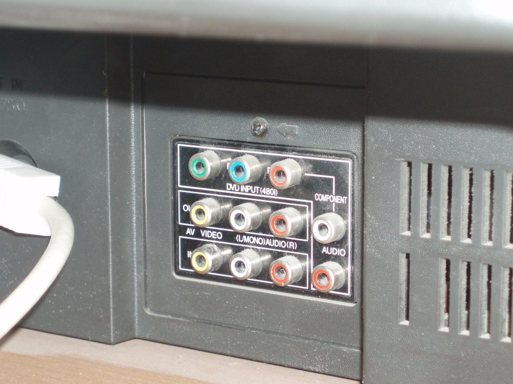
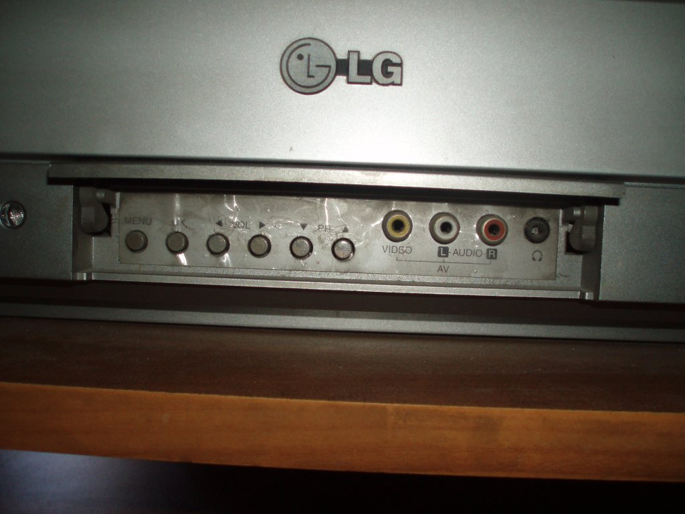
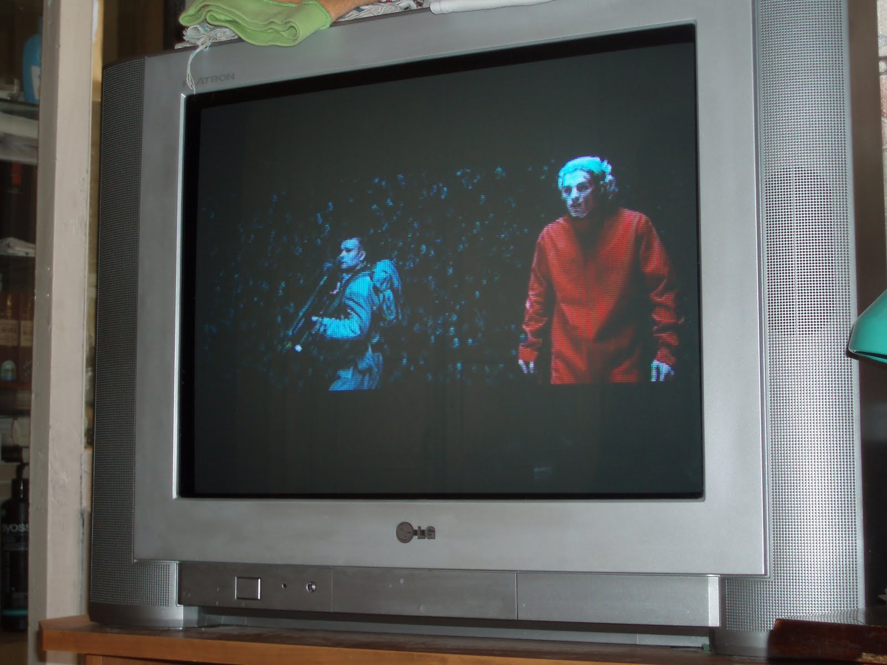

Примерно год назад у меня дома случилась перестановка мебели, в результате которой телевизор стал стоять недалеко от компьютера. Тогда же мне пришла в голову мысль подключить телевизор к компьютеру для более удобного просмотра фильмов. Но, прошёл почти год, прежде чем у меня появилось достаточно свободного времени, чтобы этим заняться. Сейчас я в отпуске и решил этим заняться.
Хочу заранее сказать, что я не любитель отслеживать разного рода новинки в области компьютерной и видеотехники. Телевизор этот купила моя жена, когда ещё начала работать, с ней мы тогда не были знакомы. Компьютер с этой видеокартой (NVidia GeForce 6600) я купил где-то в начале 2006 года, когда мой старый компьютер стал намертво виснуть при повышенной нагрузке на процессор (архивирование, просмотр некоторых фильмов, просмотр флеша). Старый компьютер модернизации не подлежал и поэтому из старого компьютера в новый попал только привод DVD-RW, который позже сломался и был заменён на другой.
Есть люди, которым нравится покупать все новинки компьютерной и видеотехники. Им вряд ли будет интересно читать всё нижеследующее, потому что всё это уже давно устарело. Эти люди будут любят задавать вопросы "зачем тебе этот хлам" и раздавать ценные советы вида "купи себе то-то и то-то и не возись с этим барахлом". Заранее прошу таких людей не беспокоить меня.
Итак, перво-наперво, нужно было купить кабели для соединения телевизора и компьютера.
Я обследовал видеокарту и нашёл там разъём S-Video (собственно, я и так знал, что он там есть). Один друг мне до этого рассказывал, что он тоже подключал телевизор к компьютеру (правда под Windows) и сказал, что с этим кабелем он намучился, потому что их бывает несколько разных видов. Я это вспомнил, внимательно рассмотрел разъём и поискал его в интернете. Нашёл вот такую статью Разъёмы S-Video, применяемые в видеокартах и убедился в том, что у меня на видеокарте именно разъём S-Video, стандартный 4-контактный.
Этот разъём может работать в двух режимах:
Самым лучшим вариантом был бы компонентный сигнал, при котором каждый компонент передаётся по отдельному проводу. Но, к сожалению, мой разъём S-Video такого варианта обеспечить не может, его могут обеспечить 7-контактный или 9-контактный варианты разъёма S-Video. Подробнее об этом можно почитать, например, здесь: Подключение компьютера к телевизору.
Ещё можно было бы попробовать воспользоваться разъёмом DVI, имеющимся на видеокарте, но забегая вперёд скажу, что переходников DVI на 3 RCA я не нашёл ни в каком виде. Если найду - опробую этот вариант.
Затем я обследовал телевизор. На телевизоре оказалось огромное количество разъёмов типа "Тюльпан", которые правильно называются RCA.
Фото задней панели телевизора:
Разъёмы на задней панели выделены в 3 группы:
1 группа. 5 разъёмов для подключения DVD-плеера с развёрткой на 480 строк:
2 группа. 3 разъёма для видеовхода:
3 группа. 3 разъёма для видеовыхода:
Фото передней панели телевизора:
Разъёмы на передней панели:
4 группа:
Соответственно, вариантов подключения у меня оказалось не много - либо к группе 2 на задней панели, либо к группе 4 на передней панели. При этом используется композитный видеосигнал и два аудиосигнала. Это вариант подключения, обеспечивающий самое низкое качество видеосигнала.
Расстояние между телевизором и компьютером - примерно 2 метра. Итак, с кабелями я определился - мне нужны кабель S-Video-RCA и MiniJack-2RCA. Первая же попытка найти такие кабели в магазинах бытовой электроники окончилась неудачей - именно таких кабелей нигде не было. Вторая попытка оказалась успешной - я купил их в магазине, специализирующемся на продаже электронных компонентов. Были кабели длиной 1,5 метра и 3 метра, я взял трёхметровые.
Теперь дело стало за настройкой. Для начала воспользовался вот этой заметкой Подключение двух мониторов: Xinerama или TwinView?. Настроил Xinerama, т.к. мне показался этот способ более естественным для X-сервера.
Получился вот такой файл конфигурации /etc/X11/xorg.conf:
Section "ServerLayout"
Identifier "X.org Configured"
Screen "Screen0" 0 0
Screen "Screen1" RightOf "Screen0"
InputDevice "Mouse0" "CorePointer"
InputDevice "Keyboard0" "CoreKeyboard"
Option "Xinerama" "On"
EndSection
Section "Files"
ModulePath "/usr/lib/xorg/modules"
FontPath "/usr/share/fonts/X11/misc"
FontPath "/var/lib/defoma/x-ttcidfont-conf.d/dirs/TrueType"
EndSection
Section "Module"
Load "glx"
Load "dbe"
Load "record"
Load "extmod"
EndSection
Section "ServerFlags"
Option "AutoAddDevices" "False"
Option "AllowEmptyInput" "False"
Option "DontZap" "True"
EndSection
Section "InputDevice"
Identifier "Keyboard0"
Driver "kbd"
Option "XkbRules" "xorg"
Option "XkbModel" "pc104"
Option "XkbLayout" "us,ru"
Option "XkbOptions" "grp:alt_shift_toggle"
Option "XkbVariant" ",winkeys"
Option "AutoRepeat" "250 30"
EndSection
Section "InputDevice"
Identifier "Mouse0"
Driver "mouse"
Option "Protocol" "auto"
Option "Device" "/dev/input/mice"
Option "ZAxisMapping" "4 5 6 7"
EndSection
Section "Monitor"
Identifier "Monitor0"
VendorName "LG"
ModelName "Flatron L1730S"
DisplaySize 338 270
HorizSync 30.0 - 80.2
VertRefresh 56.0 - 75.0
ModeLine "1280x1024_75.00" 138.54 1280 1368 1504 1728 1024 1025 1028 1069 -hsync +vsync
ModeLine "1024x768_75.00" 81.80 1024 1080 1192 1360 768 769 772 802 -hsync +vsync
ModeLine "800x600_75.00" 48.91 800 840 920 1040 600 601 604 627 -hsync +vsync
ModeLine "640x480_75.00" 30.72 640 664 728 816 480 481 484 502 -hsync +vsync
Option "DPMS"
EndSection
Section "Monitor"
Identifier "Monitor1"
VendorName "LG"
ModelName "Flatron RT-21FA32X"
DisplaySize 450 350
HorizSync 15.625 - 15.625
VertRefresh 50.0 - 50.0
Option "DPMS"
EndSection
Section "Device"
Identifier "Card0"
Driver "nvidia"
VendorName "nVidia Corporation"
BoardName "NV43 [GeForce 6600]"
BusID "5:0:0"
EndSection
Section "Device"
Identifier "Card1"
Driver "nvidia"
VendorName "nVidia Corporation"
BoardName "NV43 [GeForce 6600]"
BusID "5:0:0"
Screen 1
EndSection
Section "Screen"
Identifier "Screen0"
Device "Card0"
Monitor "Monitor0"
DefaultDepth 24
SubSection "Display"
Viewport 0 0
Depth 8
Modes "1280x1024_75.00" "1024x768_75.00" "800x600_75.00" "640x480_75.00"
EndSubSection
SubSection "Display"
Viewport 0 0
Depth 24
Modes "1280x1024_75.00" "1024x768_75.00" "800x600_75.00" "640x480_75.00"
EndSubSection
SubSection "Display"
Viewport 0 0
Depth 32
Modes "1280x1024_75.00" "1024x768_75.00" "800x600_75.00" "640x480_75.00"
EndSubSection
EndSection
Section "Screen"
Identifier "Screen1"
Device "Card1"
Monitor "Monitor1"
DefaultDepth 24
SubSection "Display"
Depth 24
#Modes "768x576"
Modes "800x600"
EndSubSection
EndSection
Возможно, что некоторые настройки здесь избыточны и не необходимы для нормальной работы. Действительное разрешение S-Video 768x576 точек, поэтому я указал наиболее похожее из доступных - 800x600. Частоты вертикальной и горизонтальной развёртки для режима S-Video - 15,625 КГц и 50 Гц. Геометрические размеры растровой сетки телевизионного экрана - 450 на 350 мм (замерял линейкой).
Настройки монитора перекочевали из предыдущей конфигурации, где они были заданы явно, поскольку видеокарта по протоколу EDID принимает от монитора несколько заниженные режимы.
Действительные настройки видеокарты я смотрел с помощью программы nvidia-settings. Там можно найти доступные видеорежимы, посмотреть частоту вертикальной развёртки (действительная частота оказалась равной 60,32 Гц), можно отцентрировать картинку, задать её размеры на экране, настроить насыщенность цвета.
